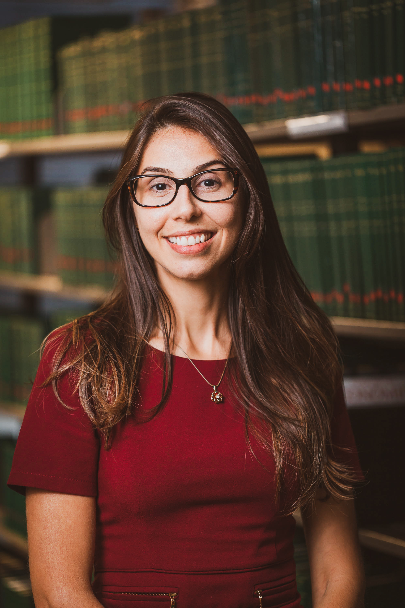

Mariana Guglielmo, PhD
Higher Education Program Management |
Digital Learning |
Curriculum & Assessment |
EdTech Implementation
Detroit, MI | (248) 201-5109 | mariana.guglielmo@wayne.edu
Authorized to work in the U.S.
No sponsorship required
LinkedIn

Professional Summary
Higher education and education technology professional with 10+ years
of experience leading national-scale digital learning, curriculum, assessment,
instructional content, and stakeholder-facing education initiatives in Brazil.
At Fundação Getulio Vargas (FGV), a leading Brazilian higher education and public
policy institution, served as Researcher and Project Owner for FGV Ensino Médio,
a national supplemental learning and assessment platform serving 120,000+ registered
users. Experienced coordinating cross-functional teams of programmers, designers,
statisticians, researchers, educators, subject-matter experts, government partners,
schools, and private education networks.
Background combines program and project delivery, educational technology operations,
curriculum policy, assessment systems, content development, undergraduate teaching,
K-12 classroom instruction, user support, partner communication, reporting, and
continuous improvement. PhD in History with doctoral research focused on Brazil’s
National Curriculum Framework (BNCC), state-level curriculum implementation,
instructional materials, assessment expectations, and comparative Brazil-Argentina/Mercosur
curriculum policy. Currently pursuing a Graduate Certificate in Information Management
at Wayne State University.
Core Competencies
- Program and Project Management
- Digital Learning Operations
- EdTech Implementation
- Higher Education Administration
- Curriculum and Assessment
- K-12 and Higher Education Systems
- Stakeholder and Partner Management
- Government and Public-Sector Education Partnerships
- Cross-Functional Team Coordination
- Faculty and SME Collaboration
- Student Support and Advising-Style Guidance
- Learning Materials Development
- Assessment Item Banks
- Learning Data Reporting
- Continuous Improvement
- Documentation and Workflow Design
- Remote and Distributed Collaboration
- Information Architecture
- Research, Writing, and Policy Analysis
Professional Experience
Fundação Getulio Vargas (FGV) — Rio de Janeiro, Brazil
FGV is a leading Brazilian higher education, public policy, and applied
research institution. Held the main appointment as Researcher and Project
Owner while also contributing to curriculum, undergraduate teaching,
educational materials, and partner-facing initiatives.
Researcher and Project Owner, Educational Technology (2012 - 2024)
-
Led day-to-day execution of FGV Ensino Médio, a national supplemental
learning and assessment platform serving 120,000+ registered users,
coordinating product, content, assessment, platform operations, partner
support, reporting, maintenance, and continuous improvement.
-
Coordinated a cross-functional team of programmers, web designers,
statisticians, researchers, and educator contributors from requirements
gathering through launch, content updates, maintenance, user support,
and ongoing improvement.
-
Managed digital learning resources including online courses, video
lectures, interactive learning objects, assessment materials, commented
answer keys, student-facing feedback tools, partner reports, and an
11,213-item ENEM-aligned assessment bank.
-
Directed a major portal restructuring involving information architecture,
UI/UX conceptualization, digital lessons, interactive resources, video
content, assessment workflows, content organization, and quality review
processes.
-
Translated educational priorities, curriculum policy, assessment needs,
user feedback, partner requirements, and product/content changes into
actionable scopes, implementation plans, technical requirements,
contributor guidance, and user-facing communication.
-
Served as primary liaison for institutional partnerships with government
education leaders across four Brazilian states and private educational
networks, clarifying needs, aligning expectations, managing communication,
and translating complex requirements into practical action steps.
-
Coordinated partner simulations and diagnostic reporting for schools and
state education departments, working with statisticians to apply Item
Response Theory, estimate ENEM-scale proficiencies, and analyze results
by knowledge area, skill, school, and network.
-
Maintained feedback loops with technical and data colleagues to identify
recurring friction points, interpret user and program data, prioritize
improvements, and support evidence-based recommendations for platform,
assessment, and content enhancement.
-
Served as first point of contact for platform, content, data, assessment,
implementation, and partner requests; triaged issues by urgency, user
impact, deadline risk, dependencies, and strategic sensitivity before
resolving, routing, or escalating.
-
Created and maintained project trackers, timelines, contributor guidance,
onboarding materials, review templates, status communications,
documentation systems, and quality-control workflows for parallel
workstreams.
-
Recruited, interviewed, onboarded, trained, and guided educator
contributors from private, state, and federal school systems; created
templates, standards, and review processes to improve consistency,
quality, timely completion, and contributor autonomy.
-
Supported budget and expense follow-up through spending tracking, monthly
forecast reviews, and annual planning inputs in coordination with project
leadership.
-
Supported virtual learning activities, partner simulations, webinars, and
event logistics by coordinating speakers, contributors, materials, platform
readiness, timelines, presentations, and post-event follow-up.
-
Delivered complex education projects in remote and distributed settings,
including during pandemic lockdowns and while working from the United
States and Europe between 2022 and 2023.
Fundação Getulio Vargas (FGV) — Rio de Janeiro, Brazil
Lead Consultant and Education Specialist, Curriculum and Learning Initiatives (2015 - 2020)
-
Served as lead consultant for the State of Maranhão’s statewide K-12
curriculum framework, supervising subject-matter experts, review cycles,
templates, timelines, quality standards, and delivery for a multi-stakeholder
curriculum initiative.
-
Translated Brazil’s National Curriculum Framework (BNCC) and state-level
education priorities into practical curriculum structures, standards,
templates, guidance documents, and implementation plans for educator
contributors and institutional partners.
-
Helped partners reconcile national curriculum goals with local system
constraints, educator capacity, subject-area differences, implementation
timelines, and delivery realities.
-
Guided educators and subject-matter experts around common sections,
standards, review expectations, and quality requirements to create
consistency across subject areas.
-
Helped organize a national education seminar for public managers,
policymakers, and education specialists, supporting knowledge-sharing
around curriculum reform, secondary education, public policy, and
implementation challenges.
-
Co-authored a high-school history textbook series and developed online
courses, video lessons, interactive learning objects, exam-preparation
materials, and other digital resources for learning initiatives.
Fundação Getulio Vargas (FGV) — Rio de Janeiro, Brazil
Undergraduate Instructor, History and Social Sciences (2015 - 2017)
-
Taught undergraduate courses for History licensure and Social Sciences
students, many of whom were preparing for teaching and education-related
careers.
-
Supported students through class discussions, assignment guidance, academic
feedback, individual and small-group conversations, and workshops.
-
Helped undergraduates interpret academic expectations, plan coursework,
strengthen research and writing, and connect curricular content to future
teaching and professional pathways.
-
Facilitated workshops and learning activities on assessment design,
primary-source use, ENEM-style question design, and inclusive approaches
to Indigenous, African, and Afro-Brazilian history in basic education.
-
Maintained course records, assessed student work, adapted feedback for
varied levels of preparation, and strengthened student-centered instructional
and advising-style practices.
Middle and High School Teacher — Brazil
History Teacher (2007 - 2013)
-
Taught middle and high school students in public and private school
settings, including students with varied academic preparation and
socioeconomic backgrounds.
-
Began teaching at Instituto Olavo Bilac in Nova Iguaçu, working with
6th- and 7th-grade students and developing strategies to make historical
content accessible, engaging, and meaningful.
-
Designed custom learning materials when adopted textbooks were insufficient,
using visual resources, fictional writing assignments, comics, theater,
dance, music, and other creative formats to improve engagement.
-
Taught in Rio de Janeiro’s state public school system, including 6th, 7th,
and 8th grade and 1st-year high school classes in Nova Iguaçu.
-
Provided individualized academic support, feedback, and encouragement
around persistence, belonging, confidence, and decision-making.
-
Built direct classroom experience that later informed curriculum design,
digital learning development, education policy analysis, instructional
materials, and implementation planning.
Selected Projects
FGV Ensino Médio — National Digital Learning and Assessment Platform
-
Project Owner for a national platform serving 120,000+ registered users,
including students, teachers, schools, government partners, and private
educational networks.
-
The platform included digital lessons, video lectures, interactive learning
objects, assessment materials, an ENEM-aligned item bank, online tests and
simulations, commented answer keys, student diagnostics, and partner
reporting.
-
Managed an 11,213-item ENEM-aligned question bank, enabling users to
generate online tests and simulations by knowledge area, discipline, and
theme.
-
Worked with statisticians to support simulations, Item Response Theory
scoring, diagnostic reporting, proficiency estimates, and school/network-level
analysis.
-
Coordinated technical, academic, content, data, and partner-support
workstreams across launch, maintenance, and continuous improvement.
Maranhão Statewide K-12 Curriculum Framework
-
Lead consultant for Maranhão’s statewide curriculum framework, translating
BNCC requirements and state-level education priorities into practical
structures, templates, standards, and educator guidance.
-
Supervised subject-matter experts, review cycles, deadlines, quality
standards, and coordination across disciplinary areas.
-
Supported curriculum implementation planning in an ambiguous policy
environment, balancing national standards, local constraints, educator
capacity, and delivery realities.
High School History Textbook Series
-
Co-authored a high-school history textbook series, contributing to textbook
restructuring, base text, exercises, iconographic research, and alignment
with educational goals.
-
Moved from classroom-based critique of textbook limitations into professional
authorship and instructional material production.
-
Strengthened expertise in content design, educational writing, student-facing
explanation, assessment design, and curriculum alignment.
Digital Learning Materials and Contributor Development
-
Developed and coordinated online courses, video lessons, interactive learning
objects, assessment materials, and exam-preparation resources.
-
Recruited, onboarded, trained, and guided educator contributors.
-
Created templates, review standards, contributor guidance, and multi-stage
workflows to improve consistency, quality, and autonomy across deliverables.
Partner Simulations and Learning Analytics
-
Coordinated online simulations and diagnostic reporting for partner schools
and state education departments.
-
Translated assessment results and user/program data into reports,
dashboard-style summaries, and evidence-based recommendations.
-
Connected user needs, assessment logic, platform behavior, data reporting,
and partner guidance.
National Education Seminar
-
Helped organize a national seminar for public managers, policymakers, and
education specialists focused on secondary education, curriculum reform,
and implementation challenges.
-
Coordinated speakers, materials, event logistics, content, platform readiness,
and follow-up.
Doctoral Research — BNCC and Curriculum Implementation
-
Completed doctoral research titled “O que ensinar em História? Disputas e
tensões em torno da criação de um currículo nacional no Brasil.”
-
Analyzed Brazil’s National Curriculum Framework from policy design through
implementation, including translation into state curricula, instructional
materials, and assessment expectations.
-
Compared Brazilian curriculum frameworks with Argentine reforms and
Mercosur debates on transnational curriculum bases.
-
Developed expertise in policy-to-practice gaps, local adaptation, curriculum
disputes, standards implementation, educational materials, and national/state-level
education systems.
Education
Wayne State University — Detroit, MI
Graduate Certificate in Information Management (2025 - Present)
Graduate study focused on information organization, systems, data, and
information-management foundations.
Federal University of the State of Rio de Janeiro — Brazil
PhD in History (2024)
Doctoral dissertation focused on Brazil’s National Curriculum Framework,
curriculum policy disputes, state-level implementation, instructional
materials, assessment expectations, and comparative Brazil-Argentina/Mercosur
curriculum policy.
Federal Fluminense University — Brazil
M.A. in History (2011)
Research focused on social networks, family and credit relations, wealth,
social ascension, domination, and slavery in colonial Brazil, using extensive
archival research and microhistorical methods.
Federal Fluminense University — Brazil
B.A. in History (2008)
Undergraduate training in history, research, teaching, primary-source
analysis, oral history, and Brazilian/Atlantic history.
Additional Training
English Language Institute, Advanced — Wayne State University (2025)
SML 201: Introduction to Data Science — Princeton University, audited (Spring 2023)
Research Background
-
Doctoral research on BNCC, curriculum implementation, state curricula,
educational materials, and assessment expectations.
-
Master’s research using microhistorical methods and extensive archival
work across multiple archives.
-
Undergraduate research participation in the project “Memórias da África,
experiências escravas: Angolas e Minas, acesso à alforria e opções de vida
(séculos XVIII e XIX)”, including transcription and analysis of wills of
freed African women in São João del Rey and Rio de Janeiro.
-
Participation in the research group Companhia das Índias, with experience
supporting academic events including the II Colóquio Internacional Império
de Várias Faces and Congresso Internacional 1808: a Corte no Brasil.
-
Experience with oral history methods, biographical research, archival
sources, transcription, document analysis, analytical writing, and synthesis
of complex historical and educational policy debates.
Organizations and Institutions
Fundação Getulio Vargas (FGV)
Researcher, Project Owner, undergraduate instructor, curriculum consultant,
digital learning coordinator, textbook co-author, and education-policy specialist.
FGV Ensino Médio
National digital learning and assessment initiative serving 120,000+ users.
State of Maranhão / Maranhão Education System
Lead consultant for statewide K-12 curriculum framework.
Government education leaders across Brazilian states
Partner liaison and implementation support across state-level education initiatives.
Private educational networks in Brazil
Partner support, implementation planning, assessment reporting, and stakeholder
communication.
Rio de Janeiro State Public School System
Middle and high school teaching experience.
Instituto Olavo Bilac, Nova Iguaçu
Early middle-school teaching experience.
Federal Fluminense University
B.A. and M.A. in History; undergraduate research experience.
Federal University of the State of Rio de Janeiro
PhD in History.
Wayne State University
Graduate Certificate in Information Management; English Language Institute, Advanced.
Princeton University
Audited Introduction to Data Science while in Princeton during 2022–2023.
Languages
- Portuguese — Native
- English — Advanced / Professional proficiency
- Spanish — Basic
Technology and Tools
- Microsoft Office Suite: Word, Excel, PowerPoint, Outlook, Teams
- Google Workspace
- Zoom and Teams
- Canvas / LMS logic
- Digital learning platforms
- Assessment item banks
- Learning data reporting
- Project trackers and workflow documentation
- Information architecture
- Figma
- ChatGPT and AI-enabled productivity tools
- Basic SQL
- Basic Python
- Introductory database design, including ER modeling and normalization
Selected Strengths
-
Organizes complex educational work across academic, technical, administrative,
and partner-facing teams.
-
Translates broad educational, policy, or curriculum goals into concrete
scopes, workflows, timelines, templates, guidance, and implementation plans.
-
Works effectively between educators, faculty, subject-matter experts,
government partners, technical teams, data colleagues, students, and
institutional leaders.
-
Combines classroom experience, undergraduate teaching, curriculum expertise,
digital platform operations, assessment systems, and policy research.
-
Brings a student- and learner-centered perspective shaped by first-generation
college experience, K-12 teaching, undergraduate instruction, and large-scale
digital learning work.
Professional Positioning Statement
Mariana Guglielmo is a higher education and digital learning professional whose
career connects teaching, curriculum, edtech, assessment, policy implementation,
and program delivery. She is strongest in roles that require organizing complex
educational work, coordinating cross-functional teams, translating academic and
policy goals into practical systems, and supporting high-quality learning
experiences for students, educators, institutions, and partners.